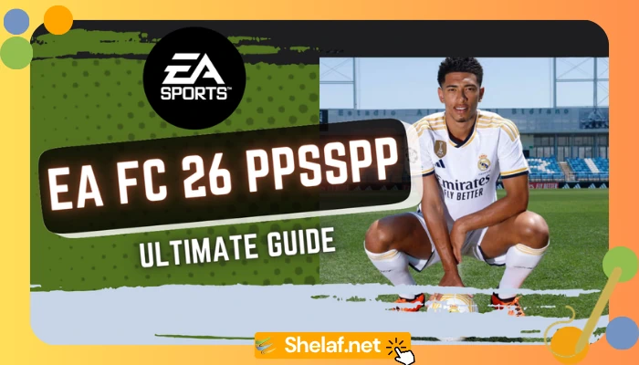
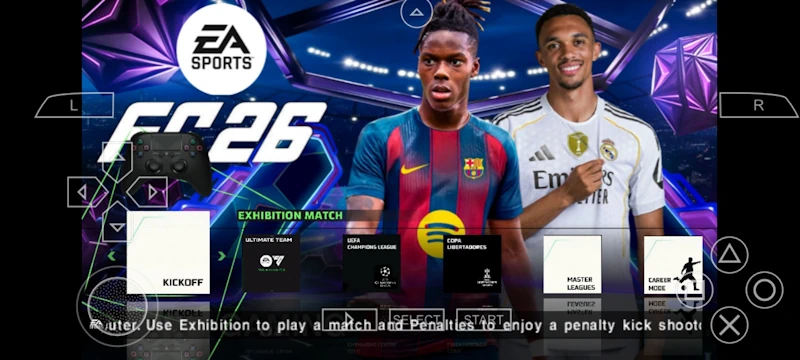
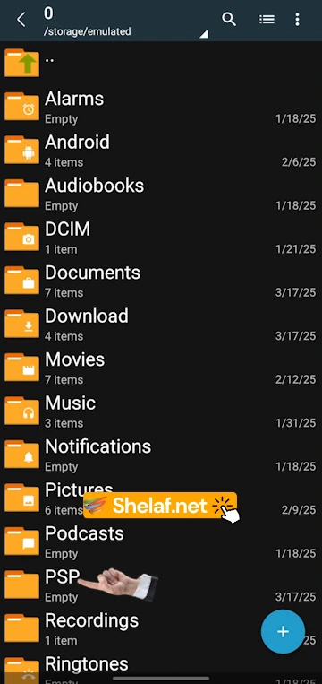

EA FC 26 PPSSPP:
The ultimate 2025/26 mod guide.

Every new football season, gamers look for ways to play with the latest squads on the go, and the modding community always delivers. This year is no different. Say hello to EA FC 26 PPSSPP, a massive fan-made project that crams the entire 2025/26 season onto your Android device or PC using the PSP emulator.
Let’s be clear: this isn’t an official game from EA. It’s a project born from pure passion, building on the success of mods like the EA SPORTS FC 25 PPSSPP fan guide. Modders take a classic PSP football game, tear it down, and rebuild it with a staggering amount of new content. As someone who’s been deep in the emulation scene for years, I can tell you these projects are what keep retro gaming exciting.
SO, WHAT EXACTLY IS EA SPORTS FC 26 PPSSPP?

Think of EA FC 26 PPSSPP as a total conversion mod. The community takes a solid foundation—usually a Pro Evolution Soccer game for the PSP—and gives it a modern facelift. The process is intense, involving a complete database overhaul, new kit designs, and updated graphics, much like how fans create an eFootball PES 2026 PPSSPP experience.
You’ll need the PPSSPP emulator to run it, which lets you play PSP games on your phone or PC. The emulator even allows for graphics settings that make the game look better than it ever did on the original console. You get a portable football game that feels surprisingly current.
What’s New? A Look at the 2025/26 Season Features
Presentation and Graphics
- PS5-Style Camera: The standout addition is a new “long” camera angle. It’s a feature that has been refined in other community projects, like the PES 2024 PPSSPP PS5 Cam mod, and it gives you a wider, more tactical view of the action. You can even install an optional Camera Pack for more choices.
- HD Graphics: The difference is noticeable. You get better grass textures, reworked stadiums, and more realistic player models.
- Modern Interface: The menus, backgrounds, and scoreboards have all been updated with an authentic EAFC 26 theme.
- Updated Player Looks: Over 589 player faces have been added or tweaked, focusing on rising stars and giving them accurate hairstyles and details.
- Current Kits: All clubs and national teams have their 2025/26 season kits and mini kits, making everything look sharp.
Authenticity and Content
- Latest Transfers: The squads are current as of the latest transfer window. All major player movements are included.
- Accurate Leagues: Promoted and relegated teams are in their proper leagues for the new season.
- All European Competitions: You can play fully branded versions of the UEFA Champions League, Europa League, and Conference League.
- Peter Drury on Commentary: The commentary has been updated with lines from the legendary Peter Drury, which adds a fantastic layer of atmosphere.
The Game Modes You Know and Love
You’re getting more than just exhibition matches. The EA FC 26 PPSSPP mod is packed with the deep, engaging modes you’d expect, rivaling other huge projects like those in the PES 2025 PPSSPP Android guide.
- Master League: Take the reins of a club and control everything—transfers, tactics, and finances—as you fight for trophies.
- Become A Legend: Create a player and live out their entire career, from a nobody to a world-class legend.
- Tournaments: Jump straight into the action with the World Cup or club knockout competitions like the Champions League.
How to Install EA FC 26 PPSSPP on Android & PC
Alright, let’s get this installed. The process for this mod is specific, so follow these steps carefully to get it working.
What You’ll Need:
- PPSSPP Emulator: Grab it from the official website or Google Play Store.
- File Archiver: ZArchiver is best for Android. 7-Zip or WinRAR works great for PC
- The Game Files: You’ll need the main Game File, the Textures + SAVEDATA file, and the optional Camera Pack if you want it:
Part 1: Main Game Installation
- Extract the Game File: Find the main game file you downloaded (e.g., EA Sports FC 26 PSP V1 Game File.zip) and extract it. You’ll get a folder, likely named EA SPORTS FC 26 PSP V1.
- Move the Game Folder: Take that entire extracted folder and move it into the PSP directory. This is where PPSSPP looks for games.

- Extract Other Files: Now, extract the Textures + SAVE DATA file. This will give you three folders: GAME, SAVEDATA, and TEXTURES.
- Copy and Paste: Copy the GAME, SAVEDATA, and TEXTURES folders. Paste them directly into your main PSP folder. Your device will ask if you want to replace or merge the files—go ahead and approve it. This injects the new graphics and squad updates.
- Check Your Work: Your final folder setup should look like this:

- PSP/EA SPORTS FC 26 PSP V1/
- PSP/GAME/
- PSP/SAVEDATA/
- PSP/TEXTURES/
- Launch the Game: Open PPSSPP, go to Settings > Tools > Developer Tools, and make sure “Replace Textures” is checked. Now head to the “Games” tab, open the GAME folder, and you should see the game icon. Tap it and play!

Part 2: Installing the Optional Camera Pack
- Extract the Pack: Unzip the Camera Pack file you downloaded.
- Pick a Camera: Inside, you’ll see several files named EBOOT.OLD. Each one is a different camera angle (normal, long, etc.).
- Copy Your Choice: Copy the EBOOT.OLD file for the camera you want to try.
- Find the SYSDIR Folder: Navigate deep into your game folder: PSP/GAME/EA SPORTS FC 26 PPSSPP V1/PSP_GAME/SYSDIR/.
- Backup and Replace: First, rename the original EBOOT.OLD file in that folder to EBOOT.OLD.bak. This saves the default camera just in case. Now, paste the new EBOOT.OLD file you copied earlier into this SYSDIR folder.
- Check it Out: Run the game, and your new camera angle should be active
Quick Fixes and Important Notes
- Black Screen? This is a classic modding issue. Go to PPSSPP’s Settings > System > Language and switch it to Español (América Latina). That usually fixes it.
- Game Lagging? In PPSSPP, go to Settings > Graphics and try lowering the “Rendering Resolution” or setting “Frameskipping” to 1.
- Read the Instructions: Always check for a readme.txt file from the modders. It might have crucial info.
- Compatibility: Make sure any add-ons like the Camera Pack are made for the exact version of the mod you’re using.
Conclusion: Is It Worth It?
Ultimately, the EA FC 26 PPSSPP mod is a fantastic way to keep your mobile football experience fresh without needing the latest hardware. It’s a testament to a passionate community that keeps multiple series alive, from EA FC to classic titles covered in the FIFA 2025 PPSSPP download guide.
Yes, it takes a bit of setup. But for a free, feature-packed game with all the current squads and a ton of gameplay, it’s pretty hard to beat.